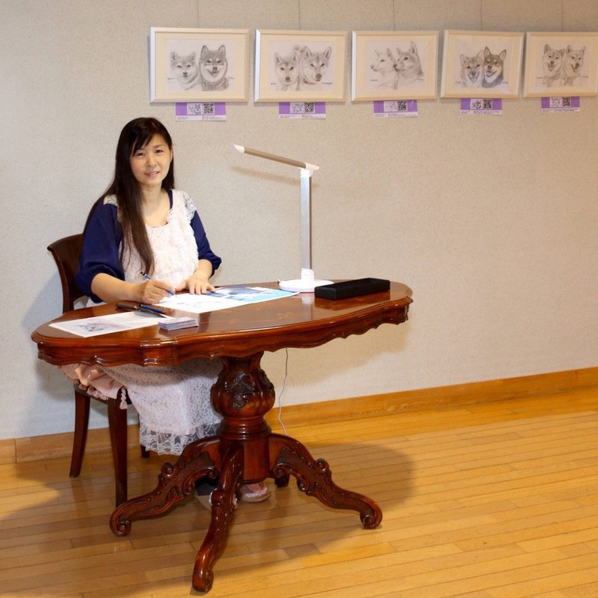

1978年 秋田県美術展 油絵 奨励賞
1979年 秋田県美術展 油絵 入選
1996年 鉛筆画個展 「真実の肖像」 秋田県大館市
2016年 写真展個展「のんのそら」大館能代空港
2016年 写真展個展「のんのそら」田園調布
2018年 東京カメラ部2018はinstagram部門入選
2018年 しまうまプリント公式アンバサダー就任
2018年 みんなでつくるフォトブック48smile企画・制作
2019年 みんなでつくるフォトブック48hengao企画・制作
2019年 みんなでつくるフォトブック48Puppy企画・制作
2019年 フォトブック売上金全額犬猫保護団体へ寄付
2019年 アトリエうののん START
2019年 アトリエうののん鉛筆画展個展 大館能代空港
